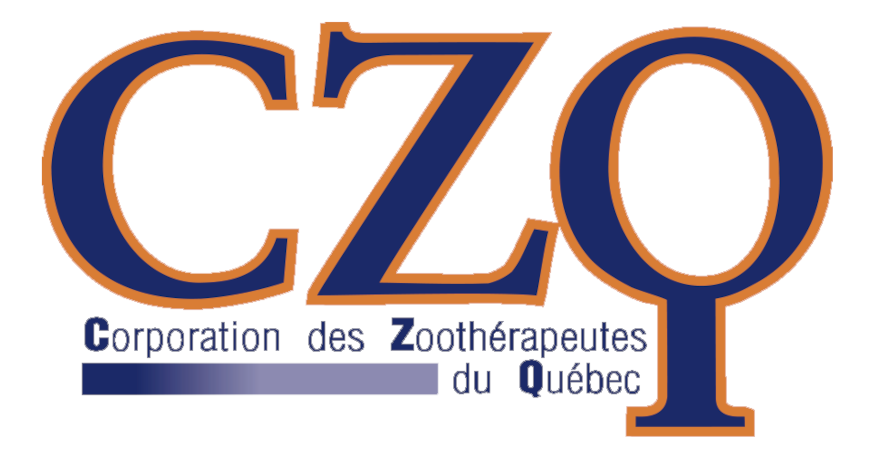
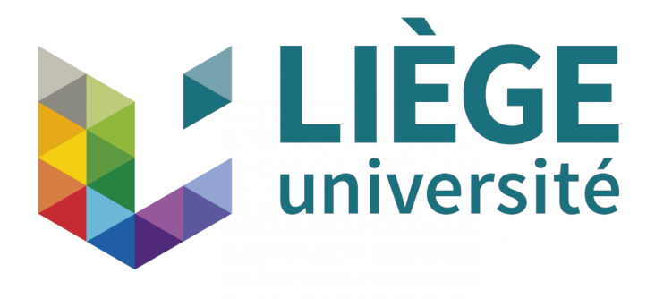
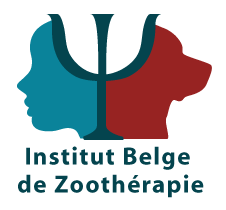

Animal-assisted therapist and physiotherapist
Hi, I'm Perrine. I grew up in Belgium in a family of 5 children and was lucky enough to have a little sister like no other; Audrey was born 3 years after me with Down's Syndrome. Thanks to her, I grew up in a special family and learned to savor every little victory.
I became a physiotherapist in 2015 and specialized in neurological rehabilitation for adults and children. Then I wanted to broaden my field of expertise and bring a little extra touch to my sessions, so I trained in animal-assisted therapy. For two years, I underwent intensive training to be able to accompany you in your development with the help of my four-legged partners. I'm also a member of the Corporation des zoothérapeutes du Québec (CZQ).
My qualifications:
- Master's degree in Physiotherapy
- Animal-assisted therapist and canine behaviorist for 2 years
- 2 year program in animal-assisted therapy and activities
- Léopold Busquet's Physiological chains for 2 years
- 6 month program in caregiving and coaching
- Michel le Métayer's Motor Evolution Levels
- Sensory-motor development from birth to first steps
  
Contact me